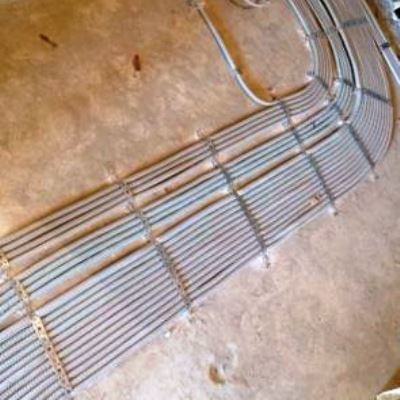
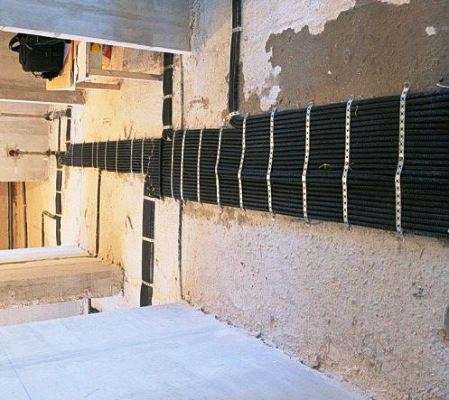
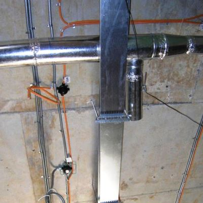
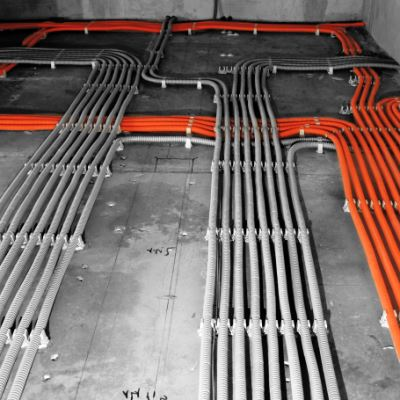

Качественный электромонтаж в Санкт-Петербурге и ленобласти, стаж 12 лет. Частный электрик, недорого и качественно.
Тел. 8 904 642 08 57 Николай.

Монтаж электропроводки в полу.
Как идеальное решение инновационных технологий.
Посмотрите цены ниже! Жду звонка!
Современные технологии строительного производства в области инновационных электромонтажных работ, достигают невероятного уровня развития. И это происходит вовсе не случайно, просто потому, что за серьезные и долговечные дела берутся исключительно профессионалы дела от А до Я.
На данный момент речь идет о монтаже электропроводки в полу, которая сейчас становится популярной и востребованной среди многочисленного количества потребителей, независимо от конкретного предназначения здания или какого-либо другого сооружения.
Провести проводку в стяжке пола.
Монтаж электропроводки в стяжке пола – это актуальный и самое главное удобный способ проведения эклектических сетей, ведь тут можно выделить не один ряд преимущественных перспектив, которые на 100% оправдывают данное умозаключение.
Сколько стоит монтаж проводки в полу?
|
Вариант квартиры. |
Цена в рублях. |
|
В однокомнатной квартире. |
29000 |
|
Двухкомнатной. |
35000 |
|
Трёхкомнатной. |
44000 |
|
Четырех комнатной. |
50000 |
|
Монтаж проводки в полу погонный метр. |
300 |
|
Электромонтаж кухни под ключ. |
9000 |
|
Электромонтаж комнаты под ключ. |
10000 |
Преимущество проводки по полу.
|  |  |
В первую очередь, надежность и долговечность решения монтажа электропроводки в полу, как показывает практика, уже успели ни один раз зарекомендовать себя исключительно с положительной стороны своего существования.
Во вторую очередь, безопасность использования на протяжении многих лет, ведь кабель прокладывается в специализированной гофрированной трубе, что непременно гарантирует сохранение его высококачественного состояния, даже в таких случаях, как: затопление, перегрев, замыкание и многое другое.
В третью очередь, монтаж электропроводки в полу, считается одним из самых непосредственных эргономичных решений, а также экономически оправданным со всех сторон рассмотрения данного вопроса.
Если вы наконец-то, решились или, просто-напросто, заставила ситуация произвести в кратчайшие сроки замену электропроводки в квартире, доме, офисе и т.п. То, обязательно проконсультируйтесь с высококвалифицированными специалистами дела, а именно, сегодня брига мастеров, имеет не только многолетний опыт работы в сфере прокладки электрических кабелей и другого дополнительного кабельно-проводникового оборудования, но и в состоянии нести ответственность за изложенную достоверную информацию, которая касается недорогого монтажа электропроводки в полу.
|  |  |
План проводов перед заливкой пола.
Хочется напомнить, что данный вид строительных работ требует максимально точного внимания мастера, в противном случае новая проводка в доме не станет служить вам, вне гарантийных сроков использования.
То есть, речь идет о том, что обязательно перед заливанием соответствующей стяжки в квартире или доме, необходимо произвести специализированный план - проект положения электрических кабелей. Ведь, когда наступит момент вновь облагораживания территории, вы уже четко будете знать, где и как, проложена кабельно-проводниковая продукция для того чтобы ее испортить механическим внедрением.
Вывод: сейчас не встретишь ни одного человека, который не хотел бы шагать в ногу со временем, поэтому электропроводка в полу при помощи команды профессионалов, бригады мастеров - это выгодные условия проведения всех работ недорого.
Это оптимальное решение, ведь мы с каждым заказчиком работаем индивидуально.

Сколько будут стоить материалы.
Расценки на электропроводку.
Электромонтаж в доме.
Замена электропроводки в двухкомнатной квартире?.
Сколько стоит сделать внутреннюю проводку?.
Установка люстр и светильников.
Электромонтаж проводов в бане.